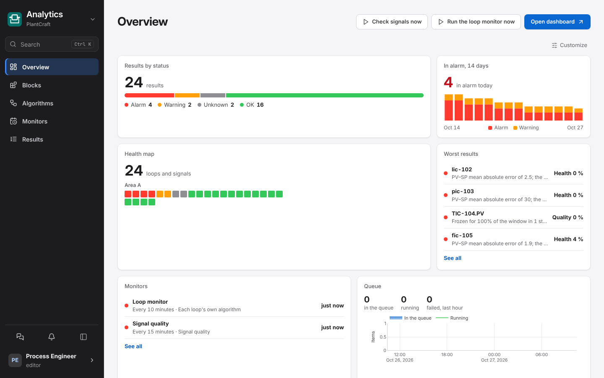

Industrial software for process engineers
Spend your time on the plant, not on building the tools.
PlantCraft is a complete, open suite: historian, analytics, alarms, dashboards and diagrams, process models and plant documents in one place, built to work with AI. You ask, and the assistant builds the method, the block, the rule or the dashboard. You go straight to where the plant has a problem, and plan the fix with your team.

01 · Open
All of it open, and yours to extend.
Every line of code and every method is open. Nothing is a black box: a finding says how it was reached, and the algorithm behind it is blocks and Python you can read, change and share.
- Apache-2.0Use it, change it, ship it inside your own products. No paid edition, no locked feature.
- Open methodsLoop performance, signal quality, alarm performance against ISA-18.2: written from public literature and tested on public data, so you can check, cite and improve them.
- A complete suiteEach app does one job and shares the same people, plant assets, signals and look.
- ExpandableApps work together only through what they publish, so a new app for your process, your research or your client slots in beside the official ones.
02 · Secure
Built for the plant's IT and OT review.
Plants install nothing their security teams have not approved. PlantCraft is built for that review from the first line, and a two-page security guide maps it to the Purdue model and IEC 62443.
- OfflineInstalls from one signed bundle with no internet. No telemetry, update check, licence call, web font or CDN.
- Read-only to the plantReads OPC UA, PI Web API, MQTT, Modbus TCP, SQL and CSV. It never writes to a DCS, PLC or historian.
- One port, sign-in by defaultOnly the HTTPS proxy listens. Roles are checked on every route, and an audit log keeps who changed what.
- AI under your controlNo model is called until an administrator sets one up, and it can run on your own network. The assistant reads only what the person asking may read.
- Isolated calculationsCode that people or the assistant write runs on workers with no network, no secrets and hard limits.
- Never lose dataOne data folder, a backup before every update, and a rollback by itself when an update fails.
03 · LLM-first
Ask, don't build.
Engineers lose weeks building tools before they can look at the plant. In PlantCraft the language model does that work, so your time goes to what only you can do: find the problem, understand it, and plan the fix with your team.
- Create by askingEvery page has an assistant with tasks for that page. It proposes the block, the algorithm, the alarm rule or the model with its fields filled in; you review it and confirm.
- Find the problems firstAnalytics ranks every signal and loop with a level, a score and a sentence that says why. You start from the worst, not from a blank screen.
- Ask about the plantThe assistant answers from the plant's own data, results, documents and history, with charts and links to its sources.
- Your own AI, tooCopy any block, model or the plant map as a prompt, or let your assistant read the plant through a read-only MCP server.
Why did this alarm fire?
Which loops should we fix first this week?
Help me create a block that detects a sticky valve.
Help me design a model of this heat exchanger.
What changed in the furnace since Monday?
04 · Fast
Value in days, not months.
No project before the first result. Install it, point it at the plant's data, and the first findings arrive the same day. Measured on a 4 vCPU, 16 GB server at 8,000 signals and 2,050 loops.
- about 10 min
- to install the demo suite from the offline bundle
- 106 s
- for Analytics to check every one of 2,050 loops
- 21 ms
- for a 24-hour trend of one signal (p95)
- 29,000
- values a second written by the Historian
Sources: Install PlantCraft and Sizing the server. Run the same bench on your own machine.
The suite
One platform. Every plant tool.
Each app runs in its own container and shares the same people, plant assets and look. Install the ones you need.
Build your own appAny company or research group can build an app for PlantCraft in the same format, open or closed, with AI doing most of the work. The app template brings the shared interface, the SDK, tests against a simulated plant, and the rules and prompts an AI assistant needs.
The app templateInstall
One bundle, one command.
Made for networks without internet: copy the bundle to the server, check its signature, run the installer. It sets up the platform, the apps, the demo plant if you want it, and an administrator account.
Linux for plant servers; macOS and Windows with Docker Desktop for trials. The install guide · Requirements
# Linux with Docker; the bundle from the releases page tar -xzf %%BUNDLE%%.tar.gz cd %%BUNDLE%% ./install.sh --all-apps --demo # open https://<server>/ and sign in as admin
Talk to us
Tell us about your plant.
A pilot on your unit, help to install it, training for your team, an app for your process, or a question the documentation does not answer: write to us and we answer personally.